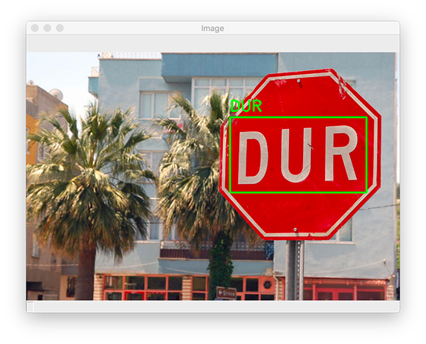

Feb 2021
Optical Character Recognition in Street Sign Application

A Convolutional Neural Network approach to OCR, with its application focused on street sign recognition.
We propose a pipeline that combines a tuned Convolutional Neural Network (CNN) model (LeNet) and an existing deep learning model
(EAST text detector), which yields relatively accurate text detection and localization results for street sign images.
This pipeline performs text localization, character segmentation, and character classification on an image, and outputs
recognized text as the results. When further combined with a text-to-speech program, this pipeline can potentially provide
people who are visually impared with the technology and ability to recognize and understand street signs.
Oct 2020
Concept Modeling in IEEE Publication Knowledge Graph
In this project, we aim to leverage the IEEE Neo4j Knowledge Graph and the latest advances in topic modeling to improve
IEEE's flagship product - IEEE Xplore, specifically its search results.
By extracting and updatng the concept library and tagging papers with the most relevant concepts,
we aspire to help researchers discover researches
without reading numerous papers, and help end-users find results that are most relevant.
Aug 2020
Humana-Mays Healthcare Competition - Top 50 Finalists
We applied a plethora of Machine Learning techniques to help predict patient transportation difficulty.
During the competition, we leveraged K-Nearest-Neighbor to impute missing values, Principle Component Analyss
to reduce data dimension, and fit an XGBoost model as well as hyper-parameter tuning to tackle the problem.
In the end, we ranked the highest-predictive variables and delivered a constructive report explaining our findings.
Aug 2019
Automated Photo Editor
I led the automoated photo editor project where a fully automated workflow takes in raw picture and
decorates the picture using emojis. By integrating Facial Recognition source code, this program is able to
put emojis accurately around the human face in the picture